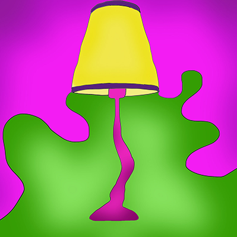
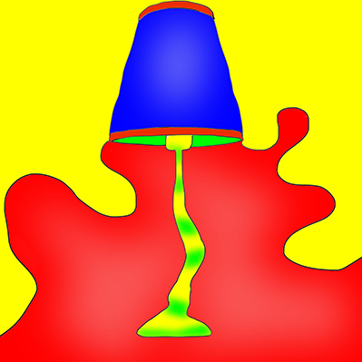
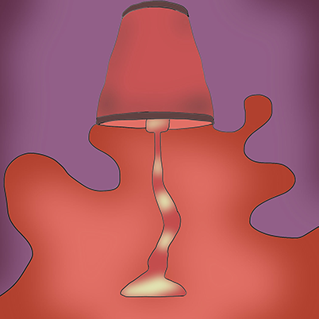

Here is an example of complemntary colors, a stimulus contrast, and contrast in hue.



Yellow
"Yellow is often considered the brightest and most energizing of the warm colors. It’s associated with happiness and sunshine. In your designs, bright yellow can lend a sense of happiness and cheerfulness. Softer yellows are commonly used as a gender-neutral color for babies (rather than blue or pink) and young children. Light yellows also give a more calm feeling of happiness than bright yellows. Dark yellows and gold-hued yellows can sometimes look antique and be used in designs where a sense of permanence is desired."
Red
"Red is a very hot color. It’s associated with fire, violence, and warfare. It’s also associated with love and passion. In history, it’s been associated with both the Devil and Cupid. Red can actually have a physical effect on people, raising blood pressure and respiration rates. It’s been shown to enhance human metabolism, too."
Green
"Green is a very down-to-earth color. It can represent new beginnings and growth. It also signifies renewal and abundance. Alternatively, green can also represent envy or jealousy, and a lack of experience. Green has many of the same calming attributes that blue has, but it also incorporates some of the energy of yellow. In design, green can have a balancing and harmonizing effect, and is very stable."
Blue
"Blue is often associated with sadness in the English language. Blue is also used extensively to represent calmness and responsibility. Light blues can be refreshing and friendly. Dark blues are more strong and reliable. Blue is also associated with peace and has spiritual and religious connotations in many cultures and traditions (for example, the Virgin Mary is generally depicted wearing blue robes)."
Orange
"Orange is a very vibrant and energetic color. In its muted forms it can be associated with the earth and with autumn. Because of its association with the changing seasons, orange can represent change and movement in general. Orange is also strongly associated with creativity."